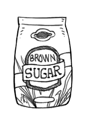

commercial brown sugar
Commercial brown sugar is refined white sugar with molasses added back in. Brown sugar adds flavor to desserts and baked goods, and caramelizes better than refined sugar.
Weight: 1 cup | 7 1/2 oz | 213 g
granulated sugar
Granulated sugar, also known as table sugar, white sugar or or regular sugar, is sugar made from refined natural brown sugar. The sugar is processed to strip it of molasses. People may choose white sugar because it imparts less color, and less flavor than natural brown sugar.
The average person consumes about 24 kg of sugar per year, which is about 260 calories per day. Sugar is not essential to good health, and should be eaten sparingly.
Weight: 1 cup | 7 oz | 198 g